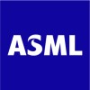
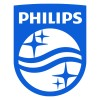
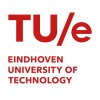

I am an enthusiastic and driven innovation leader with an extensive experience across multiple leadership positions in R&D and Program management. I have a passion for product development and developing teams within R&D and business environments. I have demonstrated positive results in business MTs ranging from €100M- €700M and developed and executed strategies for innovation and growth. I have led and developed >250fte global R&D and Program Management teams.

Jan 2024 - Present
As department manager I am responsible for the development of the electronics for all DUV lithography systems. With the teams we develop all electronics, from high-end amplifiers and IO boards to cabling and cabinets.
Jan 2023 - Dec 2023
As Department Manager at ASML i am responsible for the development and engineering of the electronics for the APPs Business line. Typical products are the devices used to characterize if the chip production was correct. Next to that i am responsible for all outsourced development (farm-out) for electronics and for the means and methods used in electronics development.
Sep 2020 - Dec 2022
Within Signify (formerly Philip Lighting) one of the major businesses is LED electronics, where we develop and produce electronic components for professional lighting systems and luminaires. These components range from drivers and LED modules to apps, connected systems and sensors.
May 2017 - Sep 2020
As Head of the global Project Management Office in our Business MT i am responsible for the flawless, timely and efficient execution of our innovation projects. I head the global team of regional PMO managers and Integral Project Managers.

Oct 2011 - Jun 2017
Within the Philips division Digital Projection Lighting we produce lighting systems for projectors. These projectors range from education and business projectors to professional cinema projectors, and the lighting systems cover both LEDs and gas discharge technologies. Within the Business MT I head the global R&D departments. We developed a novel LED based technology to replace conventional lamps and are driving the disruptive change of the projector business.
2005 - 2011
Managing various R&D groups in various businesses and research dept. Managing multiple R&D projects

2001 - 2005
Developed a novel laser technique to study plasma-surface interactions. Applications in nuclear fusion and surface etching & deposition.
1994-2000